Aplicación de escritorio que simula equipamiento clínico real: opera perillas, atiende pacientes con IA y vive el día completo de un profesional desde tu computador.
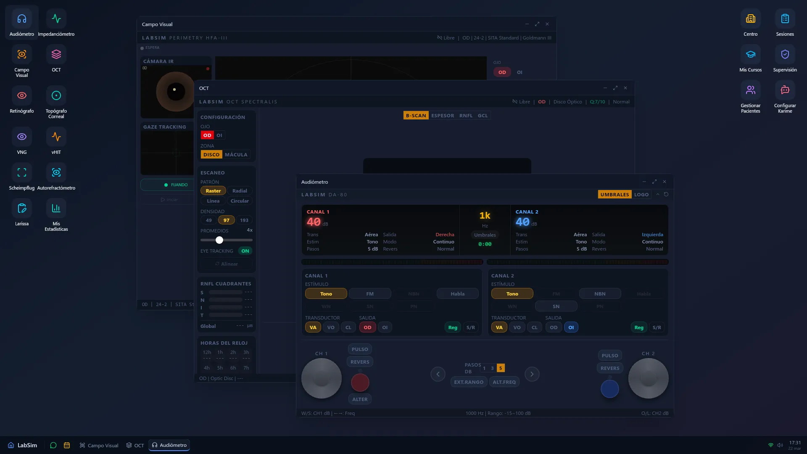
Imagen: hero.pngEquipamiento clínico realista, pacientes con inteligencia artificial y gestión pedagógica completa.
Audiómetro, impedanciómetro, campímetro, OCT y más. Con las mismas perillas, joystick y flujos de la práctica real.
Tienen personalidad, voz, historia clínica y memoria de atenciones anteriores. Responden según su estado y experiencia previa.
LLM, reconocimiento de voz y síntesis de habla corriendo en tu computador. Sin conexión a la nube para la simulación.
Docentes configuran casos, artefactos y situaciones. Karime, la secretaria virtual, gestiona agenda y atrasos.
Disponible para Windows y Linux. Aplicación de escritorio nativa construida con Tauri 2 y Rust.
Agenda real, boxes de atención, reuniones clínicas, derivaciones e interconsultas. El día completo del profesional.
Cada instrumento reproduce fielmente su contraparte real: perillas que giran, diales que ajustan, y flujos de trabajo exactos. El estudiante aprende la operación antes de tocar un equipo físico.
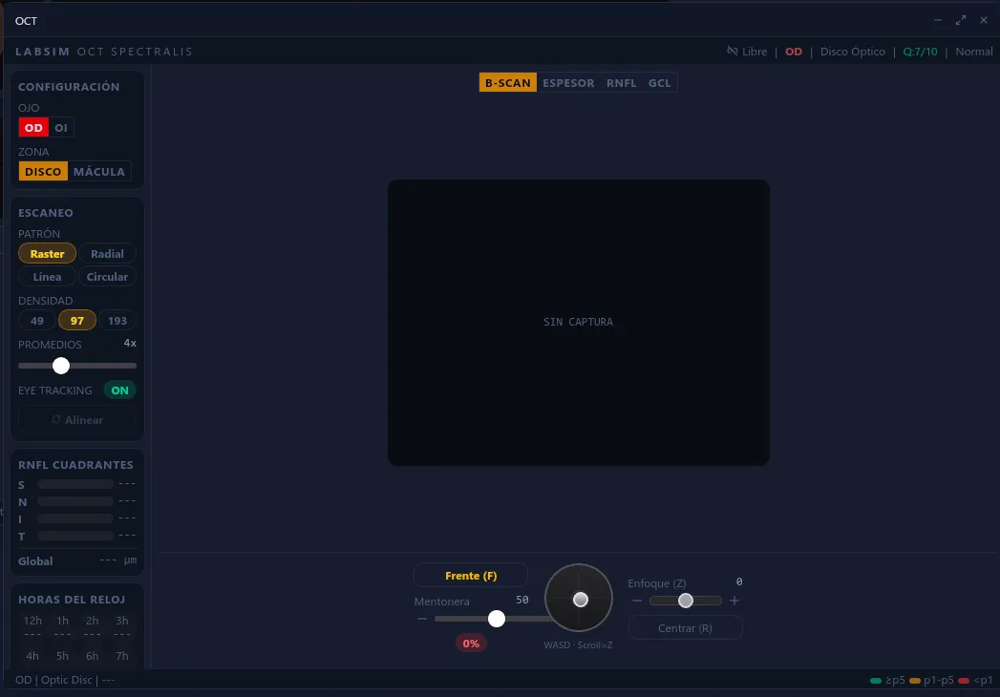
Imagen: equipo.pngKarime es la secretaria del centro. Avisa cuando llegan pacientes, informa atrasos, entrega formularios y coordina el flujo de atenciones. Se comunica por mensajería integrada, igual que en un centro clínico real.
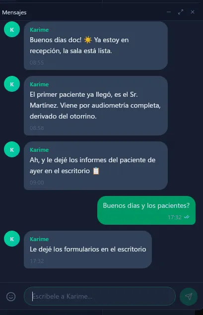
Imagen: paciente.pngCada caso clínico es un personaje con patología, personalidad, historia y artefactos configurables. Los docentes crean situaciones pedagógicas a medida: desde un paciente cooperador hasta uno ansioso que no se queda quieto.
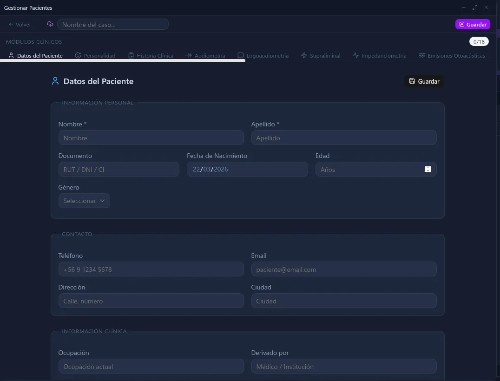
Imagen: casos.pngTemas visuales, configuración de inteligencia artificial, reconocimiento y síntesis de voz, gestión de cuenta. Cada aspecto de la plataforma se adapta al entorno y las preferencias del usuario.
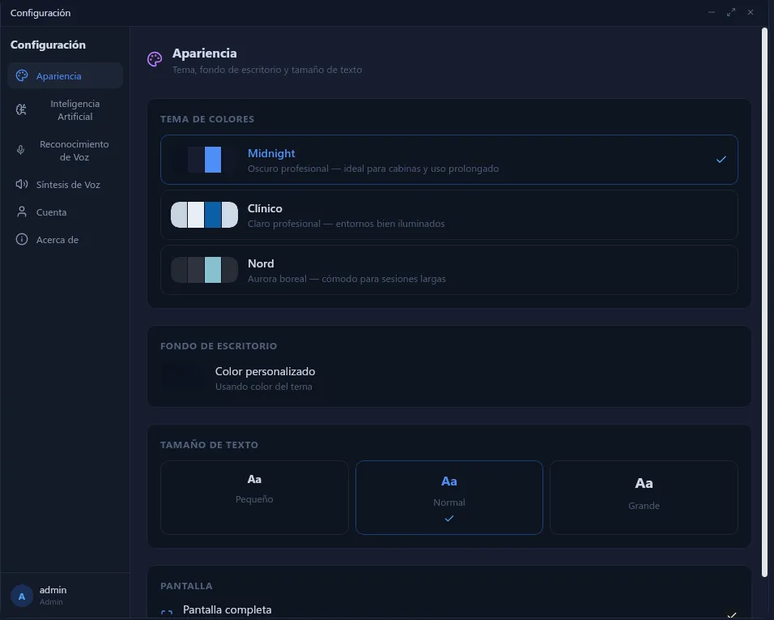
Imagen: admin.pngAgenda con horarios reales del centro. Los docentes asignan citas, los estudiantes las gestionan. Cada atención tiene paciente, procedimiento y horario, igual que en la práctica profesional.
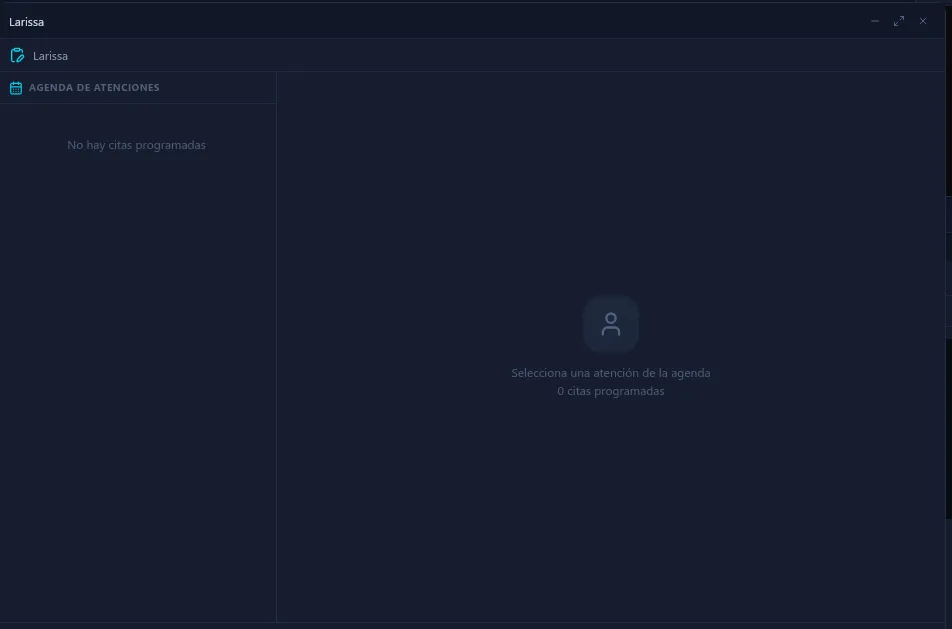
Imagen: agenda.pngAgenda con horarios reales, boxes de atención asignados, reuniones clínicas entre estudiantes, derivaciones e interconsultas. Karime gestiona el flujo de pacientes y avisa sobre atrasos. El centro emerge cuando los docentes colaboran.
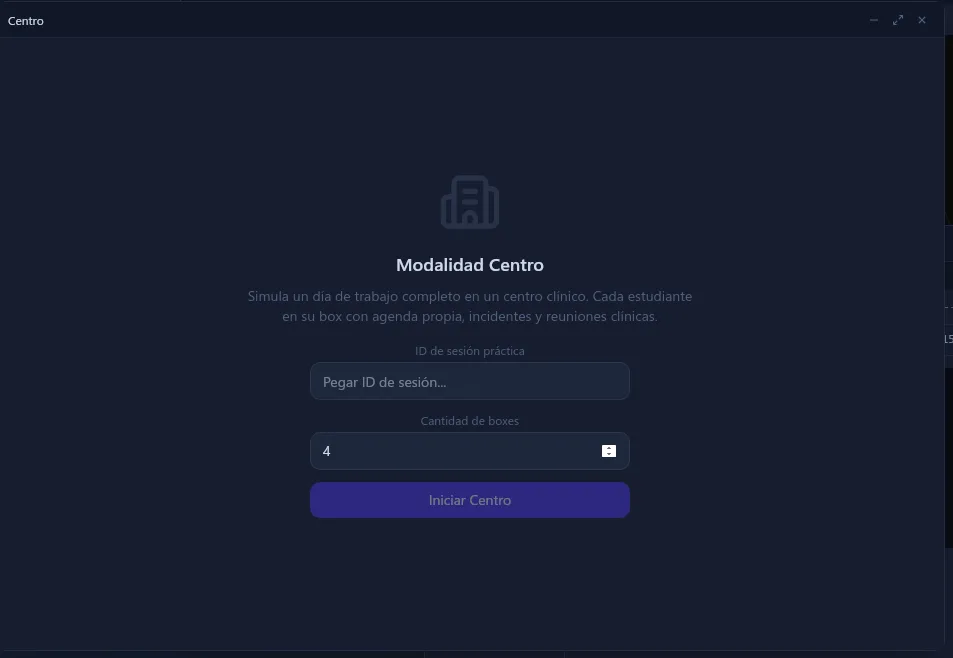
Imagen: centro.pngAudiómetro, Impedanciómetro, Logoaudiometría, Emisiones Otoacústicas, ABR, Audífonos
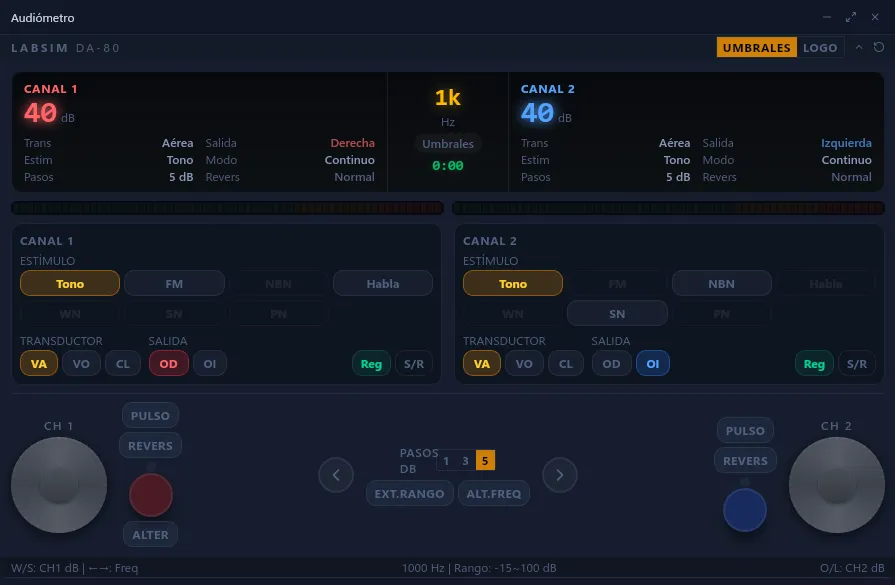
Imagen: audiologia.pngVNG, vHIT, Electrococleografía
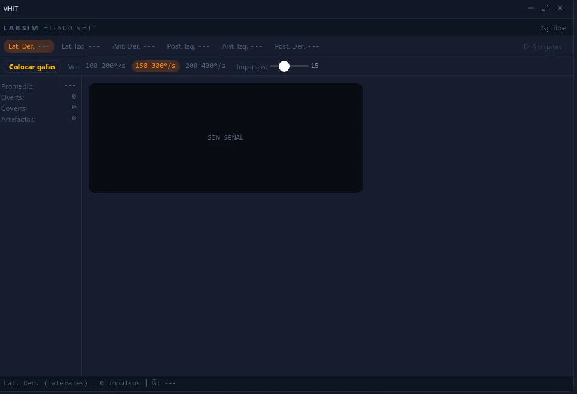
Imagen: otoneurologia.pngOCT, Campímetro, Retinógrafo, Topógrafo Corneal, Scheimpflug, Autorefractómetro
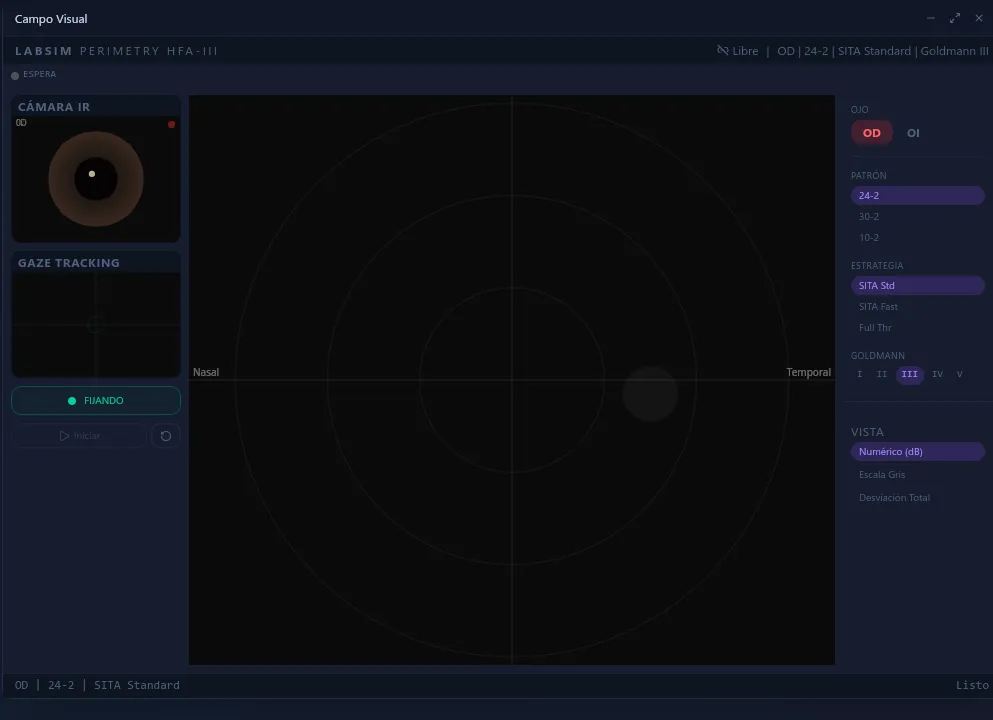
Imagen: oftalmologia.pngInstaladores para Windows y Linux, actualizados directamente desde GitHub.
